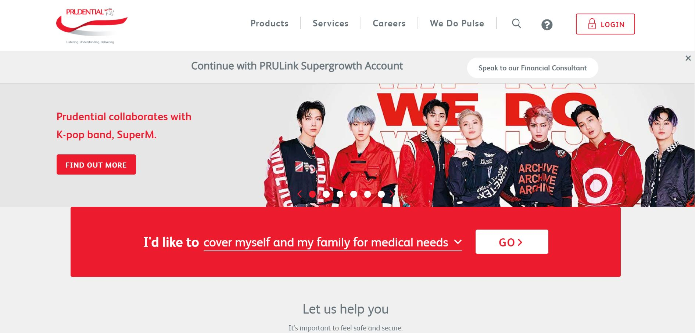

<!DOCTYPE html>
<html>
<head>
    <title>CHATBOT PROTOTYPE</title>
    <link rel= "stylesheet" type= "text/css" href= "../static/css/style.css">
    <div class='main'>
      <!-- <div class='logo1'>
        
      </div>    -->
</head>
<body>
  <header>
    <br>
  </header>

</body>
</html>
<script>
  const element = document.querySelector('.chatElement');
  window.watsonAssistantChatOptions = {
      integrationID: "4172d611-aace-4e4f-b402-792f3f41eec6", // The ID of this integration.
      region: "eu-gb", // The region your integration is hosted in.
      serviceInstanceID: "2ffb3ade-fbf9-4978-8661-fdca68d2e2ad", // The ID of your service instance.
      onLoad: function(instance) { instance.render(); }
    };
  setTimeout(function(){
    const t=document.createElement('script');
    t.src="https://web-chat.global.assistant.watson.appdomain.cloud/loadWatsonAssistantChat.js";
    document.head.appendChild(t);
  });


</script>
